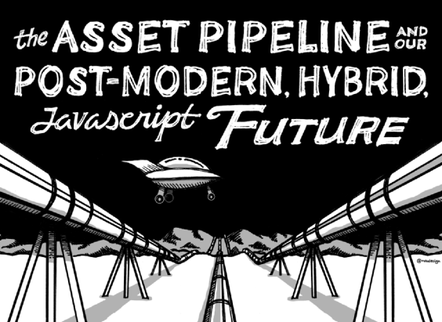
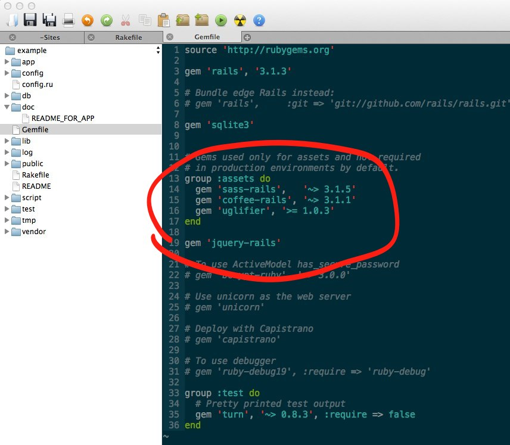
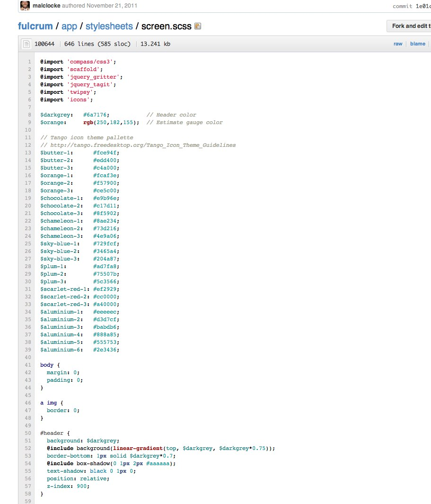
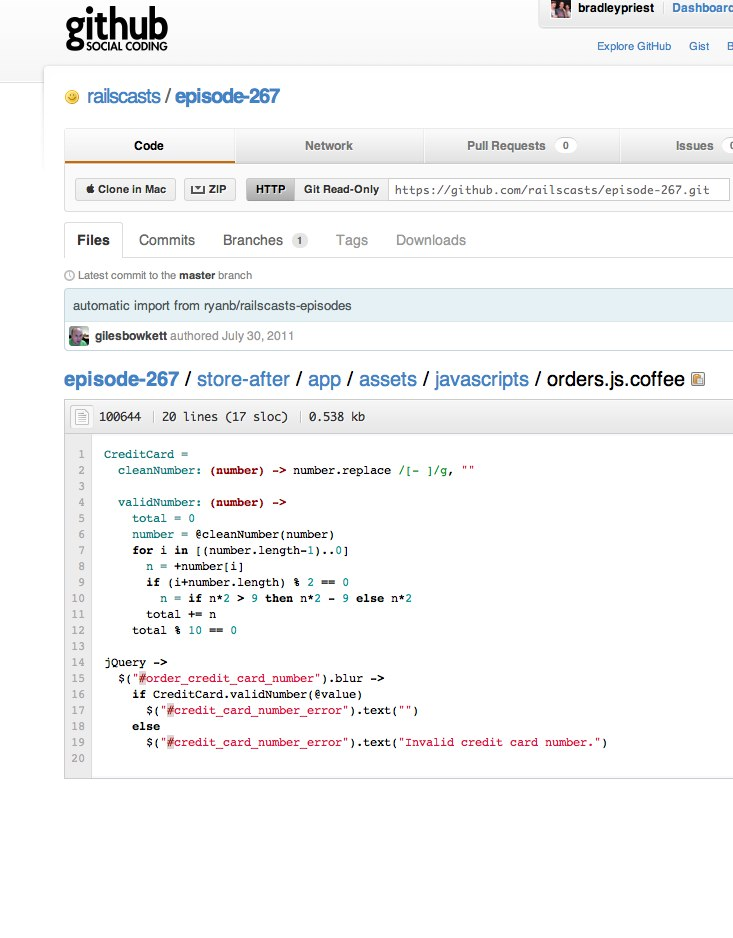

Rails 3.1: Asset Pipeline 
By Bradley Priest
What we're currently doing wrong
Organisation
Currently most Rails apps treat CSS/JS/Images as second-class citizens
They get lumped together into a couple of giant folders inside /public
Mixture of custom code, 3rd party assets
Optimization
It's currently quite an effort to optimize JS and CSS easily
Jammit is a great answer, but not enough people use it
Minified/Concatenated CSS/JS is always better
The Asset Pipeline and You
Organisation
Currently most Rails apps treat CSS/JS/Images as second-class citizens
They get lumped together into a couple of giant folders inside /public
Mixture of custom code, 3rd party assets
The asset pipeline moves your assets out of the public folder:
app/assets
lib/assets
vendor/assets
Optimization
It's currently quite an effort to optimize JS and CSS easily
Jammit is a great answer, but not enough people use it
Minified/Concatenated CSS/JS is always better
The asset pipeline provides the gem "Sprockets" which automatically concatenates and minifies your JS/CSS
It's still in it's infancy so it has a few bugs.
Shiny Things

Sane Defaults
The iconic commit
Rails 3.1 also brought some new defaults with it:
jQuery instead of Prototype
Sass
Coffeescript

Sass
Variables
Nesting
Mixins

CoffeeScript
Nothing but the good stuff